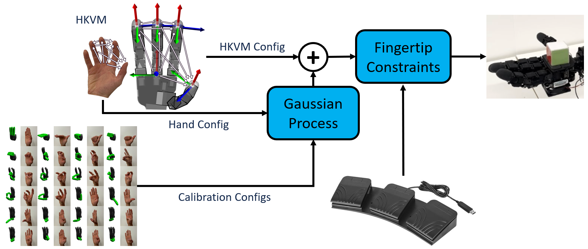
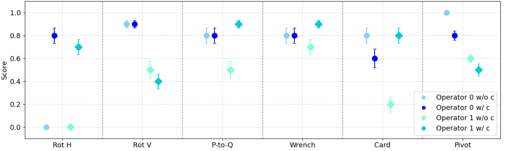
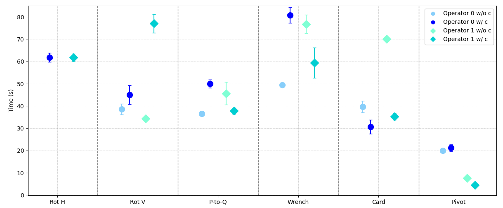

ResPilot: Teleoperated Finger Gaiting via Gaussian Process Residual Learning
CoRL 2024
*This work was completed during an internship at Honda Research Institute USA
Abstract
Dexterous robot hand teleoperation allows for long-range transfer of human manipulation expertise, and could simultaneously provide a way for humans to teach these skills to robots. However, current methods struggle to reproduce the functional workspace of the human hand, often limiting them to simple grasping tasks. We present a novel method for finger-gaited manipulation with multi-fingered robot hands. Our method provides the operator enhanced flexibility in making contacts by expanding the reachable workspace of the robot hand through residual Gaussian Process learning. We also assist the operator in maintaining stable contacts with the object by allowing them to constrain fingertips of the hand to move in concert. Extensive quantitative evaluations show that our method significantly increases the reachable workspace of the robot hand and enables the completion of novel dexterous finger gaiting tasks.
Method
We use a small (N=24) set of labeled calibration pairs to train a residual Gaussian Process that adjusts the output of an optimization-based retargeter to expand its workspace, enabling more complex manipulation strategies. Collecting this data and training the GP takes approximately 5 minutes for a new operator. We also allow the operator to enable fingertip constraints by tapping a footpedal to constrain the index, middle, or ring finger of the robot hand to pinch its thumb.
Results
The success rates of two operators on 6 difficult in-hand manipulation tasks both with and without the use of fingertip constraints. Error bars show the standard error of the measurement. When given the choice between constraints, operators succeed on average 80% of the time.
The average time each operator took to successfully complete the tasks. Operators can complete these tasks relatively quickly, taking on average 43 seconds and at most 139 seconds. This is fast enough to quickly collect many successful demos of the tasks.
Supplementary Material
Video
Uncut Experiment Videos
We test our retargeter with two different subjects on 6 challenging in-hand manipulation tasks. Each subject attempted all 6 tasks both with and without the use of fingertip constraints.
|
Cube Rot H |
Cube Rot H |
Palm-to-Quadpod |
Card Pickup |
Wrench Pickup |
Controlled Pivot |
|
|
Subject 0 Without Constraints |
||||||
|
Subject 0 With Constraints |
||||||
|
Subject 1 Without Constraints |
||||||
|
Subject 1 With Constraints |
Workspace Measurement Video
We estimated the reachable workspace of 5 different operators' hands to quantify the workspace of the robot hand under different retargeters. Operators mimicked the motions in this video three times in a row while wearing a Manus Quantum Metaglove to fully cover the workspace of each of their fingers.
BibTex
@inproceedings{naughton2024respilot,
title={ResPilot: Teleoperated Finger Gaiting via Gaussian Process Residual Learning},
author={Patrick Naughton and Jinda Cui and Karankumar Patel and Soshi Iba},
booktitle={{Conference on Robot Learning (CoRL)}},
year={2024}
}
Acknowledgements
We'd like to thank Benjamin Evans for thoughtful comments on the paper and naming the method.
The website template was borrowed from Jon Barron.